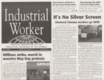

Submitted on Sat, 06/17/2006 - 12:48am
 Shattuck union workers brought their campaign for union recognition to the streets of Berkeley on Wednesday afternoon. About sixty people including many Shattuck workers gathered in front of the theatre to wave signs, hold banners, sing, shout play guitar and fiddle. The message was clear, "we are union and we want changes now". Aurelaea River, a long time Shattuck Cinemas worker brought aong her electric violin and got the proceedings under way by playing a fast tune. Then Ryan from Riot Folk played guitar and sang to get the crowd together.
Shattuck union workers brought their campaign for union recognition to the streets of Berkeley on Wednesday afternoon. About sixty people including many Shattuck workers gathered in front of the theatre to wave signs, hold banners, sing, shout play guitar and fiddle. The message was clear, "we are union and we want changes now". Aurelaea River, a long time Shattuck Cinemas worker brought aong her electric violin and got the proceedings under way by playing a fast tune. Then Ryan from Riot Folk played guitar and sang to get the crowd together.
Next came Ryan Hatt, one of the workers, to list what the workers demands are. A living wage, health care coverage, corporate accountibility, and respect. And a door chair. workers stand for long periods taking tickets. They had a chair but corpoate didn't approve. Chair gone. Then a meeting took place a couple of weeks back with the CEO. He came to explain what a union is. He wasn't quite sure what a union is after showing up an hour late. But the chair reappeared. Only to dissapear a few hours later. Rumor has it that management thought the union might claim the re issuance of the chair as a victory. The chair is stashed away for now.
Submitted on Fri, 06/16/2006 - 12:47pm
By Judith Scher, Berkeley Daily Planet - June 16, 2006.
 Standing on the bed of a blue pick-up truck, draped with a red Industrial Workers of the World banner and energized by guitar and fiddle music, Shattuck Cinemas workers and their supporters addressed working conditions at the theater Wednesday.
Standing on the bed of a blue pick-up truck, draped with a red Industrial Workers of the World banner and energized by guitar and fiddle music, Shattuck Cinemas workers and their supporters addressed working conditions at the theater Wednesday.
The rally outside the downtown theater on Shattuck Avenue near Kittredge Street was a prelude to the National Labor Relations Board-sponsored union election scheduled at the theater today (Friday).
“They need to treat us with respect,” Ryan Hatt told the crowd that grew to around 50 listeners. “There are no benefits, unless you count free movies and popcorn. People working [at the Shattuck] for over six years get $8.05 cents an hour. What we’re fighting for is a voice.”
Submitted on Thu, 06/15/2006 - 1:20pm
Headlines:
- It's No Silver Screen - Shattuck Cinema workers go IWW
- Millions strike, march in May Day protests
- U.S. to dispatch troops to Mexican border?
Featured Articles:
- International solidarity is the key issue facing unions - In today’s global economy, unions
need to build global cooperation and solidarity to survive.
- Remembering the IWW 1916 Iron Range strike - Immigrant metal miners waged bitter fight against unsafe conditions, exploitation.
Also - Extensive May Day action reports
Download a free PDF Copy of this issue.
Submitted on Thu, 06/15/2006 - 1:34am
 In its latest violent atrocity against labour and social movements, the Mexican government has attacked striking Mexican teachers, leaving five dead. For over two weeks the Mexican teachers' union section in Oaxaca state has been carrying out an incredible campaign of growing protests and direct actions in support of their demands for higher wages and increased school funding. At their most recent march a few days ago in the state capital, over a 120 000 people participated. The teachers' movement in Oaxaca has broad popular support and has linked up with other labour and human rights struggles.
In its latest violent atrocity against labour and social movements, the Mexican government has attacked striking Mexican teachers, leaving five dead. For over two weeks the Mexican teachers' union section in Oaxaca state has been carrying out an incredible campaign of growing protests and direct actions in support of their demands for higher wages and increased school funding. At their most recent march a few days ago in the state capital, over a 120 000 people participated. The teachers' movement in Oaxaca has broad popular support and has linked up with other labour and human rights struggles.
The state government of Oaxaca, and possibly soon the federal government as well, have chosen to attempt to violently repress this movement, as Mexican authorities did with the attack by thousands of police on the townspeople of Atenco on May 3-4 leaving two dead, and the attack by police on striking steel workers in the city of Lazaro Cardenas late last April, leaving three workers dead. Please read the message on the current situation in Oaxaca and if you're able, get in contact with other people and organize a protest at a consulate office of the Mexican government nearest you.
Submitted on Mon, 06/12/2006 - 3:15am
Companer@s!
Con el crecimiento desde los ultimos anos de nuestro organizacion en comunidades de trabajador@s que hablan principalmente espanol, es evidente la necesidad de propaganda como: folletos, documentos oficiales, revistas y contenido en iww.org. En conversaciones con otros miembros y simpatizantes del IWW, existe el interes en realizar y obtener los recursos para este proyecto. Un boletin del IWW en espanol es util para el trabajo de comunicacion en las comunidades donde se habla español y el IWW es activo. El grupo de trabajadores y simpatizantes del IWW en Mexico desean colaborar con articulos para el proyecto, porque seria una forma de comunicacion excelente para las organizaciones y sindicatos en America Latina y España, que el Comite de Solidaridad Internacional tiene relaciones con ellos; es un buen ejemplo de proyecto sin fronteras! Considero los siguientes conceptos basicos como una propuesta para el boletin: